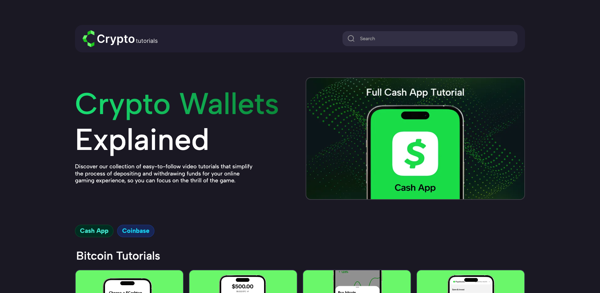
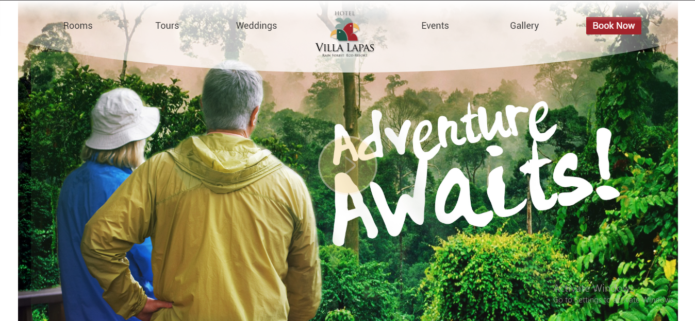

Profile
Visa EUAVisa Canada
Senior Front-End Developer & UI/UX Engineer with over 10 years of experience building scalable, high-performance web applications and design systems for production environments.
I specialize in modern JavaScript frameworks such as React, Remix, and Vue, as well as headless CMS architectures and custom WordPress solutions, with a strong focus on clean UI, usability, performance, accessibility, and long-term maintainability.
I’ve led and delivered projects across industries including sports betting, gaming, and marketing platforms, collaborating closely with designers, product teams, stakeholders, and distributed teams to turn complex requirements into reliable, user-centered products.
I stay up to date with AI-powered development and design tools (such as AI-assisted coding, design automation, and productivity workflows) to improve code quality, speed up iteration, and enhance user experiences—while always applying strong engineering judgment and best practices.
My background combines hands-on front-end development, UX/UI design, and a strong attention to detail, allowing me to consistently deliver intuitive, scalable, and production-ready interfaces.
Technical Skills
Frontend Development
- •React - Next - Remix
- •Tailwind CSS - Bootstrap
- •Advanced CSS (Flexbox, Grid, Custom Properties, Animations)
- •Modern JavaScript (Async/Await, Closures, Event Loop)
- •Performance Optimization (Lazy Loading, Code Splitting, Core Web Vitals)
- •SEO Techniques & Best Practices
- •ADA Compliance & Accessibility Standards
UI/UX Design
- •Figma (Components, Auto-layout, Prototyping, AI Integration for Design)
- •Full Application Design & Architecture
- •Photoshop - Adobe XD - Balsamiq - Sketch
- •Design Systems
- •User Research (Interviews, Usability Testing, Heuristic Evaluation)
- •Design to Code Translation
Development Tools
- •Cursor (Primary AI-Powered IDE for Development)
- •Git/GitHub (Branching, Merging, Conflict Resolution, Pipelines, Stagings, Workflows)
- •Node - Webpack - Vite - Gulp
- •WordPress (Custom Themes & Plugins Development)
- •Laravel Framework
- •CMS Platforms (Strapi) - Headless Development
- •SQL Databases (MySQL) - AI Tools for Database Management
- •REST APIs
Professional Skills
- •Agile/Scrum - CI/CD - Jira
- •Async Communication (Slack, Asana, GitHub)
- •Error Diagnosis & Troubleshooting
- •Security & Scalability
- •AI Tools for Productivity (Claude, Prompt Engineering, AI Agents, Database Tools, Figma AI Integration)
Portfolio

BetAnySports
Role:Senior Front-End Lead
Tech:Strapi + React + Remix
Focus:Headless architecture, UI, performance

Insiders
Role:Senior Front-End Lead
Tech:Wordpress
Focus:Headless architecture, UI, performance

Godds
Role:Senior Front-End Lead
Tech:Wordpress
Focus:Headless architecture, UI, performance

Crypto Tutorials
Role:Senior Front-End Lead
Tech:React
Focus:Headless architecture, UI, performance

77 Digital
Role:Senior Front-End Lead
Tech:Wordpress
Focus:Headless architecture, UI, performance

CSS Vars Practice
Role:Virtual Excersice
Tech:CSS Variables
Focus:CSS Variables, UI, performance

Esencial CR Website
Role:Senior Front-End Lead
Tech:Wordpress Theme Development
Focus:Headless architecture, UI, performance

Ahorrando Website
Role:Senior Front-End Lead
Tech:Wordpress Theme Development
Focus:Headless architecture, UI, performance

Maratones Website
Role:virtual excersice
Tech:Vanilla JS, Node.js
Focus:Vanilla JS, Node.js, UI, performance

Vanilla JS API Fetch
Role:virtual excersice
Tech:Vanilla JS, Node.js
Focus:Vanilla JS, Node.js, UI, performance

Villa Lapas Web Site
Role:Senior Front-End Lead
Tech:Wordpress Theme Development
Focus:Wordpress Theme , UI, performance

UI Reveal Boilerplate
Role:virtual excersice
Tech:Vanilla JS, Node.js
Focus:Headless architecture, UI, performance

My PWA
Role:virtual excersice
Tech:Vanilla JS, Node.js
Focus:Headless architecture, UI, performance

Work Experience
Confidential - Freelancer
CurrentSenior Web Developer
Sep 2025 - Present
React Developer building modern, high-performance user interfaces. Focus on creating reusable components, optimizing performance, and delivering clean, scalable code following React best practices.
Brand Builders Sportsbook
Senior Web Developer Lead
May 2024 - Aug 2025
Led an eight-person engineering team maintaining the company's main commercial website. Spearheaded development of the latest platform version using a modern headless architecture (Strapi CMS + React JS + Remix front-end). Coordinated tasks, ensured code quality, and guided the team through the full development lifecycle.
During my time at the company, I developed around 10 major websites, making a significant contribution to the company's success and digital presence.
Led the end-to-end development of betAnything, a comprehensive sports betting platform, using AI tools throughout the entire project lifecycle—from design to deployment. In the design phase, AI assisted in generating concepts, creating design systems, and rapid prototyping. During development, I leveraged Cursor as my primary IDE along with AI agents and prompt engineering to generate React components, implement features, refactor code, and optimize performance. This AI-driven approach resulted in significantly faster development cycles and higher code quality while allowing me to focus on complex architectural decisions and strategic implementation.
Prevent Security - BetUs Sportsbook
Senior Front End Developer - WordPress
Mar 2023 - May 2024
Delivered high-impact WordPress projects strengthening digital presence for multiple brands. Mentored Junior developers and led critical website initiatives. Designed and implemented a custom scalable, component-based framework that streamlined development, reduced maintenance time, and improved product adaptability.
During my time at the company, I developed around 10 major websites, making a significant contribution to the company's success and digital presence.
Assemble Studio
Front End Developer
Aug 2021 - Aug 2022
In my capacity, I was charged with spearheading the design and ongoing management of Email Campaigns, Banners, Landing Pages, and Websites, each crafted to meet our clients' varied requirements. My duties included deciphering the needs and creative directives of clients across a spectrum of projects. Additionally, I fostered a synergistic partnership with our design team to refine and elevate UX practices, thereby establishing benchmarks within the industry.
My engagement covered every phase of project execution—from preliminary requirement analysis through to UX and UI design. I played a key role in generating wireframes, prototypes, and design deliverables for a multitude of initiatives, employing tools such as Adobe XD, Figma, Sketch, and Balsamiq.
To optimize our development workflow, I created a toolkit using Node JS and other resources, ensuring our codebase remained modular and reusable to boost team productivity. This was enhanced by leveraging Salesforce for dynamic content management, alongside crafting templates and modules that highlight my adaptability and technical acumen.
Accenture
Web Developer Senior Analyst
Jul 2020 - Jul 2021
Led design and management of Email Campaigns, Banners, Landing Pages, and Websites for diverse clients. Partnered with design teams to refine UX practices and establish industry benchmarks. Covered all project phases from requirement analysis to UX/UI design, creating wireframes and prototypes using Adobe XD, Figma, Sketch, and Balsamiq. Developed a Node JS toolkit with modular, reusable code and integrated Salesforce for dynamic content management.
Business Solutions - JazzSports Sportsbook
Technical Lead Manager
Nov 2017 - Dec 2019
Led a diverse team of 20+ front-end developers and designers through complex projects and innovative product developments. Implemented agile methodologies to streamline workflows and enhance collaboration. Managed approximately 10 projects monthly, delivering high-quality results on time. Developed and launched email platforms, animated banners, and websites. Fostered continuous learning, shared best practices, and created an innovative environment that improved team dynamics and productivity.
Prime Ideas - MyBookie
Technical Lead Manager
Feb 2016 - Oct 2017
Led a diverse team of 20+ front-end developers and designers through complex projects and innovative product developments. Implemented agile methodologies to streamline workflows and enhance collaboration. Managed approximately 10 projects monthly, delivering high-quality results on time. Developed and launched email platforms, animated banners, and websites. Fostered continuous learning, shared best practices, and created an innovative environment that improved team dynamics and productivity.
Double Digit
Front End Developer
Sep 2015 - Feb 2016
Developed and maintained Email Campaigns, Banners, Landing Pages, and Websites tailored to client needs. Interpreted client requirements and collaborated with design teams to advance UX practices. Involved throughout the project lifecycle, creating wireframes and prototypes using Adobe XD, Figma, Sketch, and Balsamiq. Built a Node JS toolkit with modular, reusable code and integrated Salesforce for dynamic data management.
Experian Marketing Services
Front End and Email Developer
Aug 2012 - Oct 2015
Developed and maintained Email Campaigns, Banners, Landing Pages, and Websites for diverse clients. Interpreted client requirements and collaborated with design teams to advance UX practices. Involved throughout the project lifecycle, creating wireframes and prototypes using Adobe XD, Figma, Sketch, and Balsamiq. Built a Node JS toolkit with modular, reusable code and integrated Salesforce for dynamic data management.